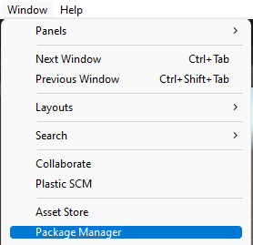
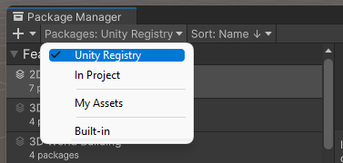
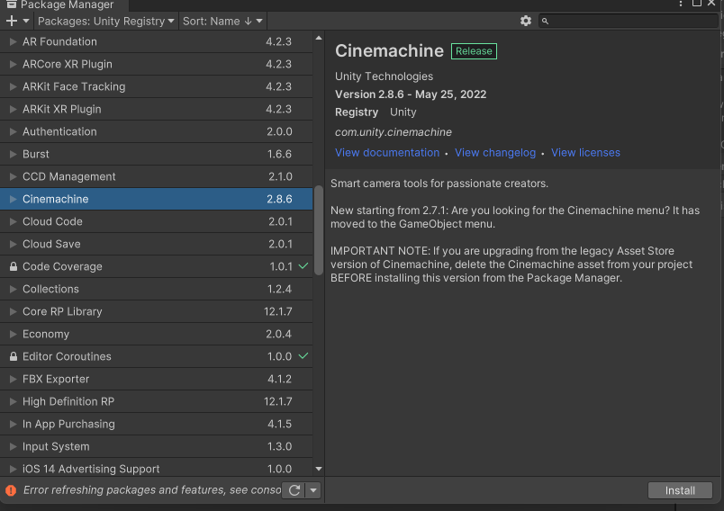
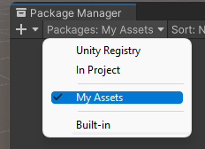
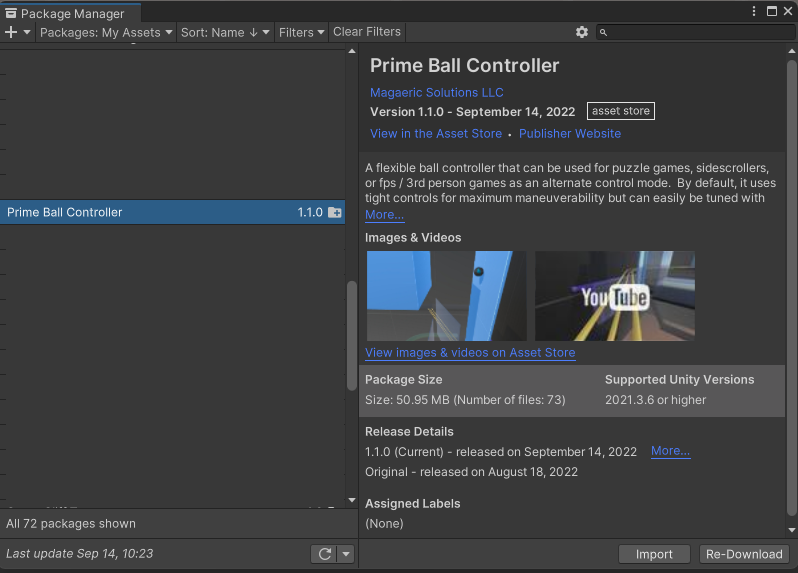
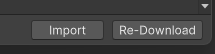
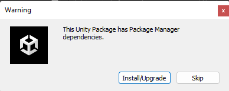
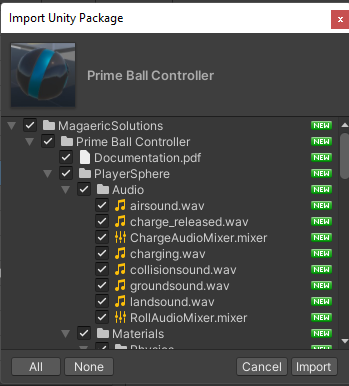
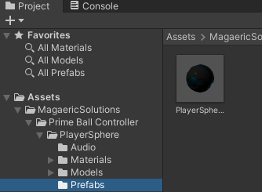
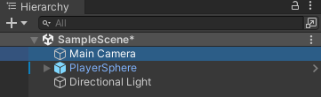

Detailed Installation Directions¶
This guide assumes you are new Unity user and will be somewhat painful for experienced users. If you know what you are doing, use the Basic Installation Guide.
1.) Install Cinemachine¶
- Select Window->Package Manager from the File Menu.
 - Change the Packages drop down to Unity Registry
 - Select Cinemachine, then Install.

2.) Import the Prime Ball Controller Package¶
- Go back to your package manager and change the Packages drop down to My Assets.
 - Find Prime Ball Controller in the list and select Download. If you don't see the package, make sure you have already purchased it from the Unity Asset Store.
 - After the download is complete, select Import
 - If a warning popus up about dependencies, it's just alerting you that Cinemachine will be installed automatically if you select Install/Upgrade. If you select skip, you must install it manually, if not already.
 - Another window will open where you can select Import again.

3.) Add the PlayerSphere prefab to your scene¶
- Find the PlayerSphere prefab in your project located at Assets->Magaeric Solutions->Prime Ball Controller->PlayerSphere->Prefabs.
 - Drag the PlayerSphere prefab into your scene.
4.) Delete the Main Camera in your scene.¶
If your project is already using Cinemachine and you need to keep your existing Main Camera / Cinemachine Brain, follow these steps. Otherwise, continue with this guide.
- Find the Main Camera in your scene
 - Select it and press delete
Your Prime Ball Controller in now ready to use. Add something for your ball to roll around on and give it a try. Check the Input Mapping Page for the default controls and directions to change them.